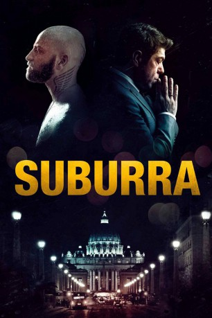

#6317 Suburra
 gesehen am 09.06.2017
gesehen am 09.06.2017
 
 IMDB-Wertung: 7.5 / 10
IMDB-Wertung: 7.5 / 10  Tomatometer: 91
Tomatometer: 91  Metascore: 0
Metascore: 0 
Das größte Bauvorhaben, das Rom je gesehen hat, stinkt nach Korruption, Betrug und kaltblütigem Mord! Ein brutaler Bandenkrieg erschüttert die Straßen. Kommissar Malatesta erahnt den wahren Grund hinter der Fehde: ein riesiges Bauvorhaben, das die Peripherie Roms bis zur Küste von Ostia mit Casinos, Hotels, Clubs zubetonieren soll. Nicht nur korrupte Behörden, Mafia und Zigeunerclans ziehen am selben schmutzigen Strang, sondern auch Würdenträger aus Kirche und Politik. Allen voran Samurai, der letzte Überlebende der Magliana-Bande und eiskalter Neo-Faschist – mit dem einzigen Ziel: Geld.
Jahr: 2015
Dauer: 135 Minuten
FSK: 16
Land: Italien Studio: Koch MediaTonspuren: DTS - ,
Untertitel: Deutsch,
Auflösung: 1080p (1920x816) Größe: 7833 MB
Genre: Thriller, Drama, Krimi
Regisseur: Stefano Sollima
Drehbuch: Maria Maggenti
Soundtrack:
Darsteller:
 Pierfrancesco Favino als Filippo Malgradi
Pierfrancesco Favino als Filippo Malgradi- Greta Scarano als Viola
 Jean-Hugues Anglade als Cardinal Berchet
Jean-Hugues Anglade als Cardinal Berchet- Alessandro Borghi als Numero 8
- Elio Germano als Sebastiano
- Giulia Gorietti als Sabrina
- Claudio Amendola als Samurai
- Lidia Vitale als Moglie Malgradi
- Marco Quaglia als Dentista
- Adamo Dionisi als Manfredi Anacleti
- Antonello Fassari als Padre di Sebastiano
- Davide Iacopini als Giovane sacerdote
- Ahmed Hafiene als Faisal
- Francesco Sechi als Ispettore Questura
- Michele Bevilacqua als Proprietario stabilimento Traiano
- Marco Zangardi als On. Rognati
- Simone Liberati als Mirko
- Yulia Kolomiets als Jelena
- Giulia Maria Fiume als Segretaria Malgradi
- Giacomo Ferrara als Spadino Anacleti
- Paolo Maria Scalondro als Colonnello Mordenti
- Svetlana Kevral als Rumena
- Pascal Zullino als On. Destini
- Massimo Santangelo als Collera
- Alberto Testone als Luce
- Andrea Pennacchi als On. Mercio
- Franca Maresa als Madre Samurai
- Francesco Quagliero als Barista
- Antonio Giuliani als Giornalista
- Davide Di Rocco als Paja
- Claudio Di Giorgio als Fieno
- Francesco Sabino als Assistente Malgradi
- Marco Marfella als Bla Bla
- Alessandro Bernardini als Bolardo
- Dario Narducci als Agente di Polizia
- Nazzareno Bomba als Bacarozzo
- Raffaele D'Introno als Cardine
- Alex Di Giorgio als Pepe
- Ottavio Spada als Cacio
- Francesco Sampaolo als Figlio Malgradi
Datei: X:\2015(N-Z)\Suburra (2015, FSK16, 1920x816).mkv seit 08.06.2017
Festplatte: HD 2015(A-Z)
 Es gibt insgesamt 161 Filme in der Gruppe '2015(N-Z)'
Es gibt insgesamt 161 Filme in der Gruppe '2015(N-Z)'